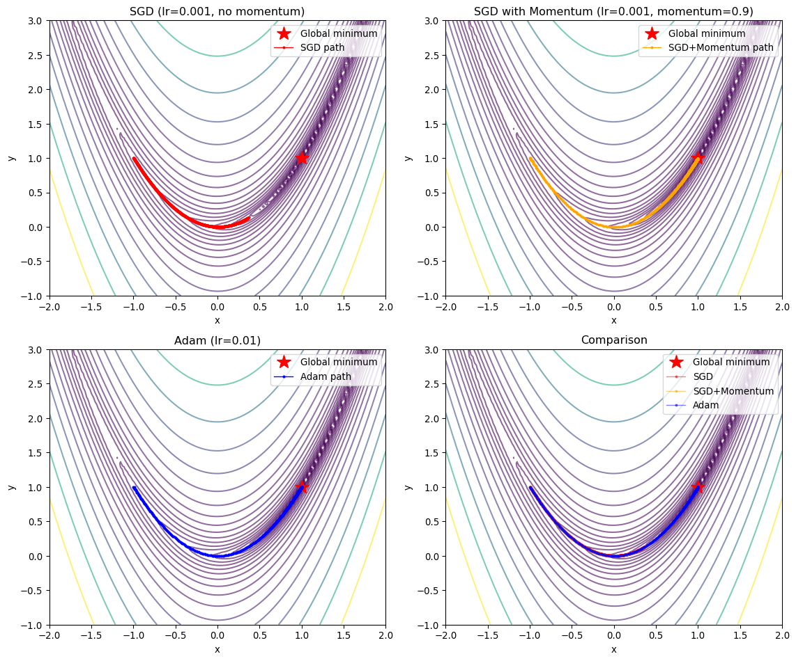
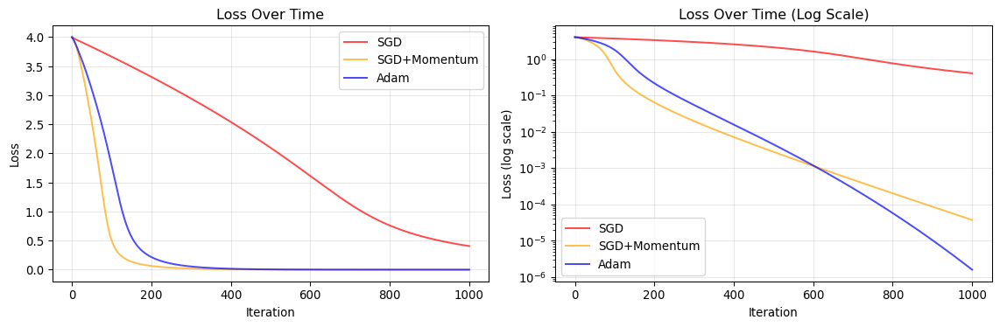

import numpy as np
import matplotlib.pyplot as plt
class SGD:
def __init__(self, learning_rate=0.01, momentum=0.0):
self.lr = learning_rate
self.momentum = momentum
self.velocity = None
def step(self, params, grads):
if self.velocity is None:
self.velocity = np.zeros_like(params)
self.velocity = self.momentum * self.velocity + grads
params = params - self.lr * self.velocity
return paramsUnderstanding Optimizers: From SGD to Adam
Optimizers are the algorithms that adjust neural network parameters to minimize the loss function. Understanding how they work is crucial for training deep learning models effectively, including geospatial foundation models.
Mathematical Foundation
The Optimization Problem
In machine learning, we want to minimize a loss function \(\mathcal{L}(\theta)\) with respect to parameters \(\theta\):
\[ \theta^* = \arg\min_{\theta} \mathcal{L}(\theta) \]
The most common approach is gradient descent, which iteratively updates parameters by moving in the direction opposite to the gradient:
\[ \theta_{t+1} = \theta_t - \eta \nabla_\theta \mathcal{L}(\theta_t) \]
where \(\eta\) is the learning rate and \(\nabla_\theta \mathcal{L}(\theta_t)\) is the gradient of the loss with respect to parameters.
Stochastic Gradient Descent (SGD)
The Algorithm
Instead of computing gradients over the entire dataset (batch gradient descent), SGD uses small batches of data:
\[ \theta_{t+1} = \theta_t - \eta g_t \]
where \(g_t = \nabla_\theta \mathcal{L}(\theta_t; x_{\text{batch}})\) is the gradient computed on a mini-batch.
Key Properties: - Simple and memory efficient - Noisy gradient estimates can help escape local minima - Requires careful learning rate tuning - Can oscillate in steep valleys
SGD with Momentum
Momentum accumulates gradients over time to smooth the optimization path:
\[ \begin{align} v_t &= \beta v_{t-1} + g_t \\ \theta_{t+1} &= \theta_t - \eta v_t \end{align} \]
where \(\beta\) (typically 0.9) controls how much past gradients influence the current update.
Implementation from Scratch
Adam Optimizer
The Algorithm
Adam (Adaptive Moment Estimation) combines ideas from momentum and adaptive learning rates. It maintains two moving averages:
- First moment (mean of gradients): \(m_t\)
- Second moment (uncentered variance of gradients): \(v_t\)
Update equations:
\[ \begin{align} m_t &= \beta_1 m_{t-1} + (1 - \beta_1) g_t \\ v_t &= \beta_2 v_{t-1} + (1 - \beta_2) g_t^2 \\ \hat{m}_t &= \frac{m_t}{1 - \beta_1^t} \\ \hat{v}_t &= \frac{v_t}{1 - \beta_2^t} \\ \theta_{t+1} &= \theta_t - \eta \frac{\hat{m}_t}{\sqrt{\hat{v}_t} + \epsilon} \end{align} \]
Key Components: - \(\beta_1\) (typically 0.9): Exponential decay rate for first moment - \(\beta_2\) (typically 0.999): Exponential decay rate for second moment - \(\epsilon\) (typically 1e-8): Small constant for numerical stability - Bias correction (\(\hat{m}_t\), \(\hat{v}_t\)): Corrects initial bias toward zero
Advantages: - Adaptive learning rates per parameter - Works well with sparse gradients - Less sensitive to learning rate choice - Robust to noisy gradients
Implementation from Scratch
class Adam:
def __init__(self, learning_rate=0.001, beta1=0.9, beta2=0.999, epsilon=1e-8):
self.lr = learning_rate
self.beta1 = beta1
self.beta2 = beta2
self.epsilon = epsilon
self.m = None
self.v = None
self.t = 0
def step(self, params, grads):
if self.m is None:
self.m = np.zeros_like(params)
self.v = np.zeros_like(params)
self.t += 1
self.m = self.beta1 * self.m + (1 - self.beta1) * grads
self.v = self.beta2 * self.v + (1 - self.beta2) * grads**2
m_hat = self.m / (1 - self.beta1**self.t)
v_hat = self.v / (1 - self.beta2**self.t)
params = params - self.lr * m_hat / (np.sqrt(v_hat) + self.epsilon)
return paramsToy Example: Rosenbrock Function
Let’s compare SGD and Adam on the Rosenbrock function, a classic optimization benchmark with a narrow curved valley:
\[ f(x, y) = (1-x)^2 + 100(y-x^2)^2 \]
The global minimum is at \((1, 1)\) with \(f(1,1) = 0\).
def rosenbrock(x, y):
return (1 - x)**2 + 100 * (y - x**2)**2
def rosenbrock_grad(x, y):
dx = -2 * (1 - x) - 400 * x * (y - x**2)
dy = 200 * (y - x**2)
return np.array([dx, dy])
def optimize(optimizer, start_point, n_steps=1000):
params = np.array(start_point, dtype=float)
history = [params.copy()]
for _ in range(n_steps):
grads = rosenbrock_grad(params[0], params[1])
params = optimizer.step(params, grads)
history.append(params.copy())
return np.array(history)start = [-1.0, 1.0]
sgd_optimizer = SGD(learning_rate=0.001, momentum=0.0)
sgd_history = optimize(sgd_optimizer, start, n_steps=1000)
sgd_momentum_optimizer = SGD(learning_rate=0.001, momentum=0.9)
sgd_momentum_history = optimize(sgd_momentum_optimizer, start, n_steps=1000)
adam_optimizer = Adam(learning_rate=0.01)
adam_history = optimize(adam_optimizer, start, n_steps=1000)Visualization and Comparison
fig, axes = plt.subplots(2, 2, figsize=(12, 10))
x = np.linspace(-2, 2, 100)
y = np.linspace(-1, 3, 100)
X, Y = np.meshgrid(x, y)
Z = rosenbrock(X, Y)
for ax in axes.flat:
ax.contour(X, Y, Z, levels=np.logspace(-1, 3, 20), cmap='viridis', alpha=0.6)
ax.plot(1, 1, 'r*', markersize=15, label='Global minimum')
ax.set_xlabel('x')
ax.set_ylabel('y')
ax.set_xlim(-2, 2)
ax.set_ylim(-1, 3)
axes[0, 0].plot(sgd_history[:, 0], sgd_history[:, 1], 'o-',
markersize=2, linewidth=1, label='SGD path', color='red')
axes[0, 0].set_title('SGD (lr=0.001, no momentum)')
axes[0, 0].legend()
axes[0, 1].plot(sgd_momentum_history[:, 0], sgd_momentum_history[:, 1], 'o-',
markersize=2, linewidth=1, label='SGD+Momentum path', color='orange')
axes[0, 1].set_title('SGD with Momentum (lr=0.001, momentum=0.9)')
axes[0, 1].legend()
axes[1, 0].plot(adam_history[:, 0], adam_history[:, 1], 'o-',
markersize=2, linewidth=1, label='Adam path', color='blue')
axes[1, 0].set_title('Adam (lr=0.01)')
axes[1, 0].legend()
axes[1, 1].plot(sgd_history[:, 0], sgd_history[:, 1], 'o-',
markersize=2, linewidth=1, alpha=0.5, label='SGD', color='red')
axes[1, 1].plot(sgd_momentum_history[:, 0], sgd_momentum_history[:, 1], 'o-',
markersize=2, linewidth=1, alpha=0.5, label='SGD+Momentum', color='orange')
axes[1, 1].plot(adam_history[:, 0], adam_history[:, 1], 'o-',
markersize=2, linewidth=1, alpha=0.5, label='Adam', color='blue')
axes[1, 1].set_title('Comparison')
axes[1, 1].legend()
plt.tight_layout()
plt.show()
Convergence Analysis
fig, (ax1, ax2) = plt.subplots(1, 2, figsize=(12, 4))
sgd_loss = [rosenbrock(p[0], p[1]) for p in sgd_history]
sgd_momentum_loss = [rosenbrock(p[0], p[1]) for p in sgd_momentum_history]
adam_loss = [rosenbrock(p[0], p[1]) for p in adam_history]
ax1.plot(sgd_loss, label='SGD', color='red', alpha=0.7)
ax1.plot(sgd_momentum_loss, label='SGD+Momentum', color='orange', alpha=0.7)
ax1.plot(adam_loss, label='Adam', color='blue', alpha=0.7)
ax1.set_xlabel('Iteration')
ax1.set_ylabel('Loss')
ax1.set_title('Loss Over Time')
ax1.legend()
ax1.grid(True, alpha=0.3)
ax2.semilogy(sgd_loss, label='SGD', color='red', alpha=0.7)
ax2.semilogy(sgd_momentum_loss, label='SGD+Momentum', color='orange', alpha=0.7)
ax2.semilogy(adam_loss, label='Adam', color='blue', alpha=0.7)
ax2.set_xlabel('Iteration')
ax2.set_ylabel('Loss (log scale)')
ax2.set_title('Loss Over Time (Log Scale)')
ax2.legend()
ax2.grid(True, alpha=0.3)
plt.tight_layout()
plt.show()
Final Results
optimizers = ['SGD', 'SGD+Momentum', 'Adam']
final_points = [sgd_history[-1], sgd_momentum_history[-1], adam_history[-1]]
final_losses = [sgd_loss[-1], sgd_momentum_loss[-1], adam_loss[-1]]
print("Optimization Results (1000 iterations):")
print("-" * 60)
for opt, point, loss in zip(optimizers, final_points, final_losses):
print(f"{opt:15s} | Final: ({point[0]:7.4f}, {point[1]:7.4f}) | Loss: {loss:.6e}")
print("-" * 60)
print(f"{'Target':15s} | Final: ( 1.0000, 1.0000) | Loss: 0.000000e+00")Optimization Results (1000 iterations):
------------------------------------------------------------
SGD | Final: ( 0.3636, 0.1292) | Loss: 4.058754e-01
SGD+Momentum | Final: ( 0.9939, 0.9878) | Loss: 3.744127e-05
Adam | Final: ( 0.9987, 0.9975) | Loss: 1.609581e-06
------------------------------------------------------------
Target | Final: ( 1.0000, 1.0000) | Loss: 0.000000e+00Key Insights from the Comparison
SGD Characteristics
- Slow convergence: Makes steady but small progress
- Sensitive to learning rate: Too high causes divergence, too low is inefficient
- Gets stuck in valleys: Struggles with the curved Rosenbrock valley
SGD with Momentum
- Faster convergence: Momentum helps navigate the valley
- Overshooting risk: Can oscillate around the minimum
- Better for curved landscapes: Accumulates velocity along consistent directions
Adam Characteristics
- Adaptive step sizes: Different learning rates for each parameter
- Fast initial progress: Quickly moves toward the minimum
- Robust: Less sensitive to learning rate choice
- Smooth convergence: Combines benefits of momentum and adaptive learning rates
Practical Recommendations
For Geospatial Foundation Models:
- Start with Adam: Good default choice for most deep learning tasks
- Learning rate: 1e-4 to 1e-3 for fine-tuning
- Learning rate: 1e-3 to 1e-2 for training from scratch
- Consider SGD with momentum for final stages: Can achieve better generalization
- Requires more careful tuning
- Often used in vision model training
- Learning rate schedules: Combine with cosine annealing or step decay
- Helps achieve better final performance
- Critical for large model training
- AdamW variant: Decouples weight decay from gradient updates
- Better regularization
- Standard choice for transformer models
Connection to Foundation Model Training
Modern geospatial foundation models (like Prithvi, SatMAE) typically use:
- Optimizer: AdamW (Adam with decoupled weight decay)
- Learning rate: 1e-4 to 1e-3 with warmup
- Schedule: Cosine decay over training epochs
- Batch size: Large batches (256-1024) with gradient accumulation
- Gradient clipping: Prevents exploding gradients in deep networks
Understanding these optimizers helps you: - Debug training issues (divergence, slow convergence) - Tune hyperparameters effectively - Understand trade-offs between speed and stability - Make informed decisions when fine-tuning models